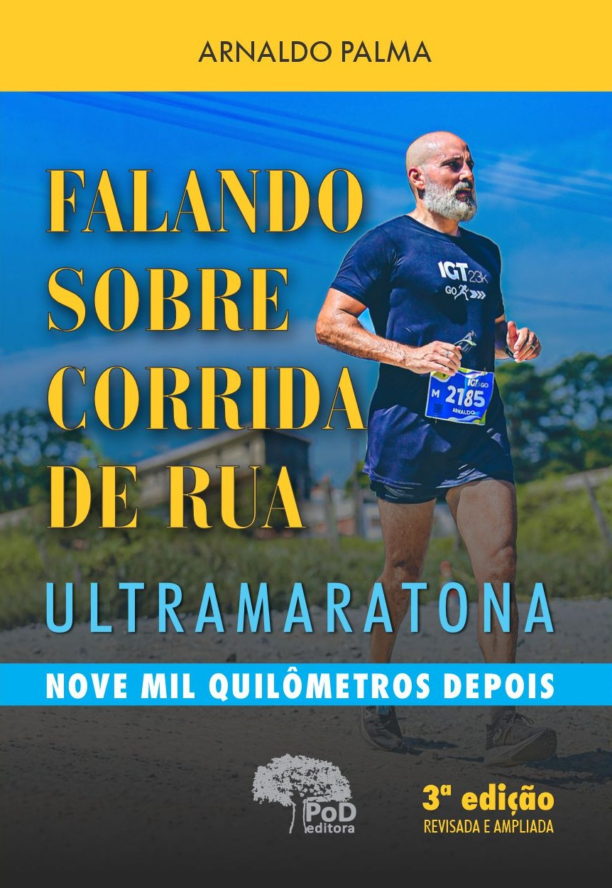
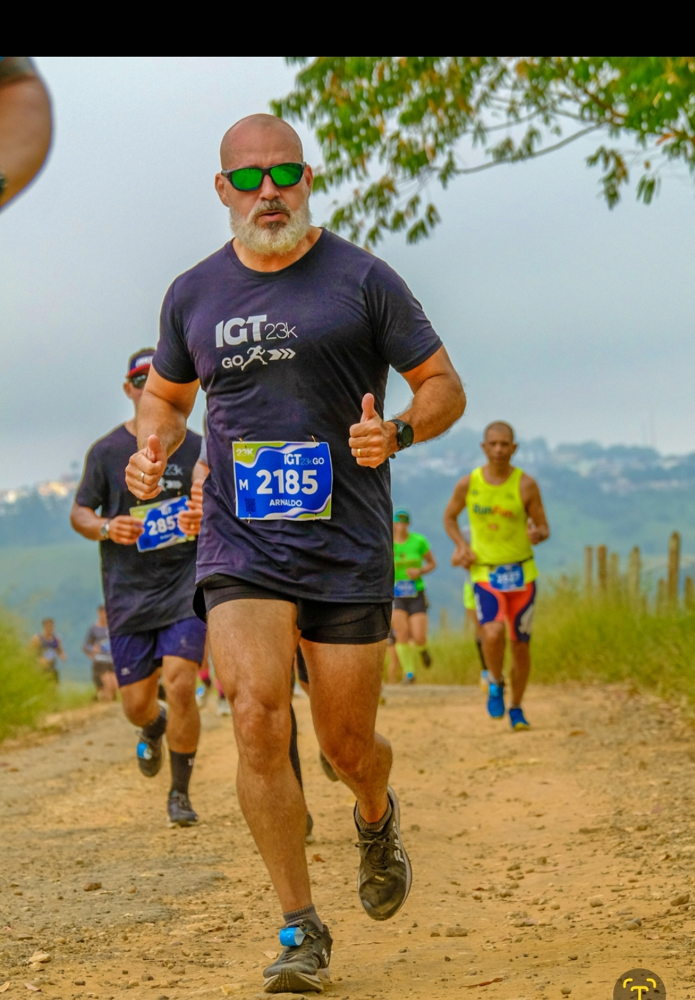

Descubra o passo a passo real de quem rodou mais de 9.000 km para transformar o próprio corpo, dominar a mente e construir uma consistência inabalável na corrida e na carreira executiva.
Quero o Método na Amazon
Não importa se o seu objective atual é perder os primeiros quilos ou correr a sua primeira maratona. O caminho exige os mesmos 3 pilares estruturados:
Entenda o seu ponto de partida real, encare de frente as desculpas que sabotam a sua saúde e aprenda a mapear os gatilhos mentais que bloqueiam a sua mudança.
Alinhe a sua mente com o seu corpo. Mude a sua identidade profunda para que acordar cedo e treinar passe a ser parte de quem você é, e não um sacrifício diário.
O segredo da performance a longo prazo. Como manter a disciplina sob qualquer condição (chuva, frio ou cansaço) para colher resultados exponenciais no relógio e na balança.
Antes de transformar o corpo e a rotina, é preciso se conhecer. Faça os testes gratuitos de autoconhecimento — DISC, Pontos Fortes, SCARF e Temperamentos — e descubra o seu ponto de partida real.
Fazer os testes de autoconhecimento
Uma jornada real que começou na periferia de Osasco e alcançou as salas de decisões de grandes multinacionais. São mais de 25 anos de liderança corporativa e mais de 500 hours de mentoria individual.
No asfalto, transformou a sua saúde através de uma paixão inabalável como ultramaratonista, desafiando e superando constantemente os limites do corpo e da mente ao longo de mais de 9.000 quilómetros rodados. Este livro é o resumo prático desta transformação.
"A necessidade da alta performance no trabalho traz uma pressão grande... Com a mentoria do Arnaldo, consegui entender melhor alguns aspetos da origem da minha ansiedade e, consequentemente, me ajudou a lidar melhor com situações desafiadoras."
Rafael NakaraBusiness Intelligence Team Lead na TAC Services
Garanta a sua edição direto na Amazon e mude a sua consistência hoje mesmo.
Comprar Versão na Amazon